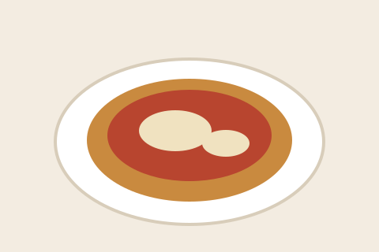

Milanesas a la Napolitana

Ingredientes
- 4 bifes de nalga finos (aproximadamente 600 g)
- 2 huevos
- 1 diente de ajo picado
- 1 cucharada de perejil fresco picado
- 200 g de pan rallado
- 200 g de salsa de tomate
- 200 g de muzzarella en fetas
- 4 fetas de jamón cocido
- Aceite para freír
- Sal y pimienta a gusto
Instrucciones
-
Batí los huevos en un bowl junto con el ajo, el perejil, la sal y la
pimienta. Dejá los bifes en esa mezcla al menos treinta minutos para
que tomen sabor.
-
Pasá cada bife por el pan rallado presionando con firmeza de
los dos lados, para que el empanado quede bien adherido y no se
despegue al freír.
-
Calentá abundante aceite en una sartén honda. Cuando esté bien caliente,
bajá las milanesas con cuidado para evitar salpicaduras.
-
Freí cada milanesa entre dos y tres minutos por lado,
hasta que dore de manera pareja. Retirá y escurrí sobre papel
absorbente.
-
Acomodá las milanesas en una fuente para horno y cubrí cada una con una
cucharada de salsa de tomate, esparciéndola lentamente para no
romper el empanado.
-
Colocá encima una feta de jamón y terminá con la muzzarella, cubriendo
toda la superficie.
-
Llevá al horno precalentado a 200 °C durante diez minutos, o
hasta que dore el queso y empiece a burbujear.
-
Serví de inmediato, acompañadas de papas fritas o una ensalada verde.